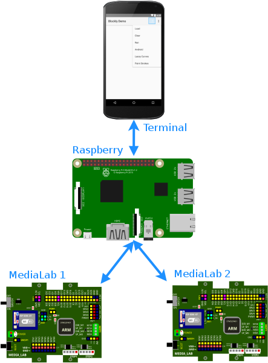
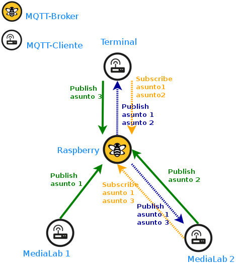
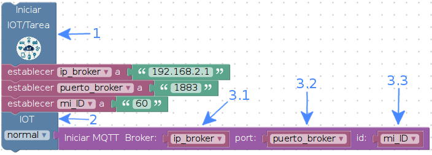
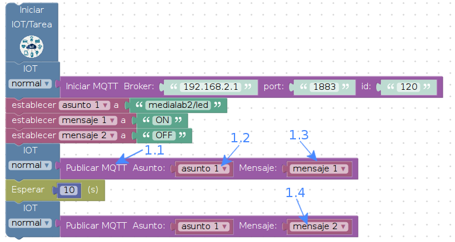
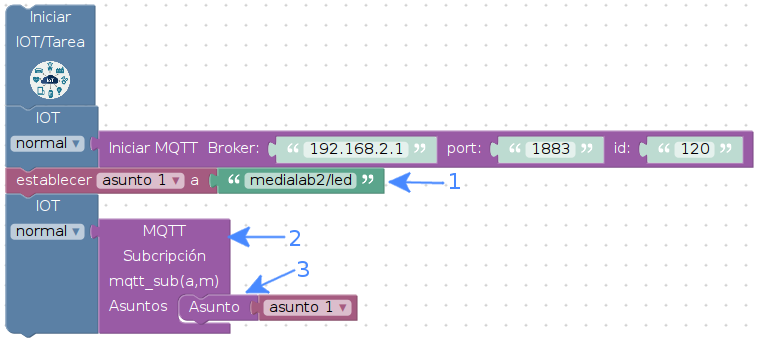
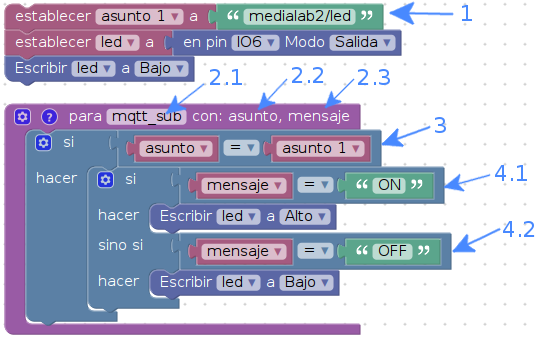

4. MQTT¶
4.1. Concepto¶
MQTT en sí es un protocolo de comunicación publicación/suscripción, se trata de mensajes clasificados según asuntos (topics) los cuales deben ser gestionados por un servidor llamado Broker, los elementos conectados a éste servicio podrán publicar mensajes con el respectivo asunto, otros dispositivos conectados al servicio podrán suscribirse a mensajes con asuntos publicados; así, mensajes publicados serán enviados a los suscriptores por parte del Broker que hará de corredor “cartero”.
4.1.1. Conexión física¶

MQTT (Message Queue Telemetry Transport) funciona sobre TCP/IP, así que se requiere un canal con esas características. En la imagen se pueden observar un ejemplo de infraestructura, en él hay cuatro elementos conectados entre sí: dos media_lab, un celular que hace de interfaz de usuario (terminal) y una raspberry pi; la conexión es lograda a partir de una comunicación wifi.
La raspberry pi es la responsable de crear el punto de acceso wifi y además de tener acceso a Internet por medio de su puerto de Ethernet. Los demás dispositivos se conectarán como estaciones a esta pequeña red con el fin de compartir en el canal información como lo es estados y ordenes a partir de mensajes.
4.1.2. Comportamiento¶
De la imagen de conexió física se puede describir la infraestructura necesaria para hacer uso del protocolo MQTT. Tanto en el celular (terminal) como en las dos tarjetas media_lab se debe contener software MQTT-cliente el cual permita hacer la solicitudes de suscripción o publicación de mensajes; en las tarjetas media_lab es logrado a partir de las librerías pre-instaladas, en el celular el cliente debe ser instalado, si el celular es Android como en el ejemplo, basta con instalar un cliente MQTT, como es el caso de MyMQTT desde Play Store; la raspberry tiene la responsabilidad de alojar el MQTT-broker, para el ejemplo, el broker es el popular software denominado mosquitto, el cual ya es pre-configurado para raspbian-lite.

Ahora se explicará como los elementos interactúan a partir del flujo de mensajes; la explicación será realizada a partir de un ejemplo:
- El servicio MQTT-broker debe ser iniciado en la raspberry; mosquitto se inicia en la raspberry, escuchará por el puerto 1883 y estará listo para gestionar la mensajería según publicaciones, suscripciones y asuntos (topic).
- Los demás dispositivos como tarjetas media_lab y celulares deben conectarse a la dirección del servicio (dirección IP de la raspberry) especificando el puerto por el cual mosquitto escucha (por defecto es 1883).
- Los dispositivos que desean suscribirse a la mensajería, deben hacerlo a el MQTT-broker especificando los asuntos que sean de interés; en la imagen, el celular solicita al broker suscribirse al asunto 1 y al asunto 2, MediaLab 2 solicita suscribirse al asunto 1 y al asunto 3
- Cualquier dispositivo conectado al servicio puede publicar mensajes con el asunto que desee, el broker se encargará de gestionar el flujo y hacer llegar a los dispositivos suscritos el mensaje correspondiente. Así entonces, el celular recibe información de ambas tarjetas ya que ambas publican asuntos a los cuales el celular está suscrito, del mismo modo, MediaLab 2 está suscrito a publicaciones de MediaLab 1 con el asusto 1, Además, MediaLab 2 está suscrita a mensajes provenientes del celular.
Se puede pensar entonces, que los dispositivos tendrán entre ellos un “chat” el cual permite que “las cosas” hablen entre ellas. Si pensamos un poco más afuera de lo que se ha mencionado, se puede pensar que una máquina le puede dar una orden a otra para que cambie su estado y entonces los mensajes no solo serán informativos, sino tomas de decisiones en sistemas máquina-máquina donde poco o nada habrá intervención del hombre.
4.2. Iniciar clientes MQTT¶

- Todas las tareas que requieran de IOT necesitan de éste bloque, éste bloque debe ser iniciado una única vez por programa.
- El bloque IOT es responsable de ejecutar tareas de Internet, además, de otras configuraciones. Adicional, éste bloque tiene una pestaña de control de velocidad la cual controla y sincroniza la comunicación entre el esp y el stm, las razones de cambiar la velocidad serán tenidas en cuenta por el programador según él note el rendimiento.
- El bloque Iniciar MQTT es responsable de hacer el enlace con el Broker, se requiere conocer del Broker la dirección IP 3.1, el puerto por donde escucha 3.2, un identificador del dispositivo que solicita la conexión 3.3. Nótese en la imagen que el bloque luego de estar diligenciado es usado por IOT 2 para pasarle los parámetros al esp responsable de la comunicación Wifi.
4.3. MQTT Publicar¶

- Las publicaciones no requieren tantos bloques como lo requiere una suscripción. En éste ejemplo se publicará mensajes con el asusto medialab2/led instintivamente el asunto indica que medialab2 tiene un led, al notar en el bloque Publicar MQTT 1.1 el asunto 1.2 será el mismo para las dos publicaciones, el cambio estará en el mensaje 1.3 que inicialmente pide que el led de medialab2 esté en su estado encendido ON, en la segunda publicación 1.4 se solicita apagar el led OFF.
4.4. MQTT Suscribir¶
Una suscripción requiere más bloques que una publicación pero no por eso es más compleja.

Como en la publicación, la suscripción requiere el asunto, para completar el ejemplo, se suscribirá a medialab2 para atender las ordenes que puedan venir de otros dispositivos como es el caso de medialab1.
Éste bloque permite que medialab2 se suscriba a diferentes asuntos los cuales serán usados por el bloque IOT capaz de comunicar al esp la tarea a ejecutar. Nótese también que éste bloque contiene escrito en su cuerpo mqtt_sub(a,m) lo cual en el lenguaje de Python es una función. Se explicará a continuación el porqué: medialab2 está suscrito a mensajes y los recibirá cuando sean publicados, pero para que no solo sea información, sino que se convierta en algo útil para tomar decisiones, esp llamará la función mqtt_sub(asunto,mensaje) del stm y adicionalmente le entregará la publicación recibida para que tome decisiones a partir del asunto y del mensaje.
Éste bloque permite que el dispositivo se suscriba a un asunto, se puden llamar varios asuntos para suscribirse, por ahora se puede suscribir a tres diferentes asuntos.
